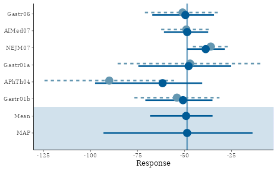
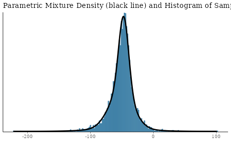
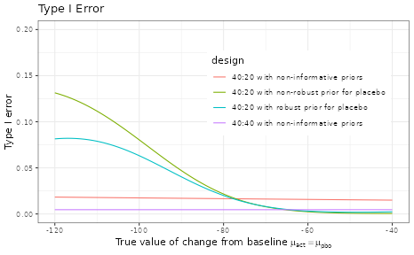
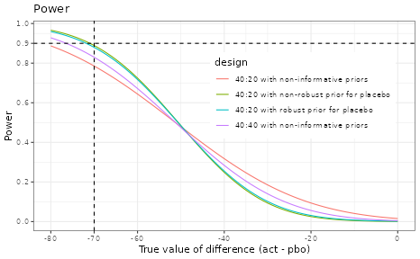

RBesT for a Normal Endpoint
Yue Li
2025-01-08
Source:vignettes/articles/introduction_normal.Rmd
introduction_normal.RmdIntroduction
The R Bayesian evidence synthesis Tools (RBesT) have been created to facilitate the use of historical information in clinical trials. Once relevant historical information has been identified, RBesT supports the derivation of informative priors via the Meta-Analytic-Predictive (MAP) approach [1], the evaluation of the trial’s operating characteristics, and the data analysis with the actual trial data. RBesT has been developed for endpoints from a number of well known distributions. Here we consider an example for a normally distributed response variable.
Trial Design with Historical Control Data
Historical Data
Let’s look at the Crohn’s disease example data [2] (data-set
crohn in RBesT). The primary endpoint is the change from
baseline in Crohn’s Disease Activity Index (CDAI), which is assumed to
be normally distributed. Note that for CDAI, an improved outcome
corresponds to a negative change from baseline.
First from historical studies we get the estimated standard deviation of the response variable as = 88, which is used to obtain the standard errors of the effect estimates.
dat <- crohn
crohn_sigma <- 88
dat$y.se <- crohn_sigma / sqrt(dat$n)| study | n | y | y.se |
|---|---|---|---|
| Gastr06 | 74 | -51 | 10.23 |
| AIMed07 | 166 | -49 | 6.83 |
| NEJM07 | 328 | -36 | 4.86 |
| Gastr01a | 20 | -47 | 19.68 |
| APhTh04 | 25 | -90 | 17.60 |
| Gastr01b | 58 | -54 | 11.55 |
Derivation of MAP Prior
The MAP prior can be derived with the function
gMAP. The between-trial heterogeneity
parameter
governs how much information will be shared from the historical trials
into the design and analysis of the future trials. In the normal case
with a known sampling standard deviation
,
the amount of borrowing from historical data depends on the ratio
.
A conservative choice for the prior on
is a HalfNormal(0,
)
distribution. For the prior on the intercept we recommend a
“unit-information” prior [3] which is set to a precision corresponding
to a single observation and centered here at no change from baseline.
Please refer to the help page ?gMAP for
detailed information. The set.seed
function is used to make the results exactly reproducible.
library(RBesT)
set.seed(689654)
map_mcmc <- gMAP(cbind(y, y.se) ~ 1 | study,
weights = n, data = dat,
family = gaussian,
beta.prior = cbind(0, crohn_sigma),
tau.dist = "HalfNormal", tau.prior = cbind(0, crohn_sigma / 2)
)
print(map_mcmc)## Generalized Meta Analytic Predictive Prior Analysis
##
## Call: gMAP(formula = cbind(y, y.se) ~ 1 | study, family = gaussian,
## data = dat, weights = n, tau.dist = "HalfNormal", tau.prior = cbind(0,
## crohn_sigma/2), beta.prior = cbind(0, crohn_sigma))
##
## Exchangeability tau strata: 1
## Prediction tau stratum : 1
## Maximal Rhat : 1
## Estimated reference scale : 88
##
## Between-trial heterogeneity of tau prediction stratum
## mean sd 2.5% 50% 97.5%
## 14.30 9.38 1.54 12.20 36.80
##
## MAP Prior MCMC sample
## mean sd 2.5% 50% 97.5%
## -49.7 18.6 -88.4 -48.7 -12.3
## a graphical representation is also available
pl <- plot(map_mcmc)
## a number of plots are immediately defined
names(pl)## [1] "densityThetaStar" "densityThetaStarLink" "forest_model"
## forest plot with model estimates
print(pl$forest_model)
Approximation of MAP Prior using a Mixture Distribution
Next, the MCMC MAP prior from the previous section is converted to a
parametric representation with the
automixfit function. This function fits a
parametric mixture representation using expectation-maximization (EM).
The number of mixture components is chosen automatically using AIC. One
can also specify the number of components for the mixture via
mixfit function and compare with the
automixfit outcome.
map <- automixfit(map_mcmc)
print(map)## EM for Normal Mixture Model
## Log-Likelihood = -17021.66
##
## Univariate normal mixture
## Reference scale: 88
## Mixture Components:
## comp1 comp2 comp3
## w 0.4366963 0.4324896 0.1308141
## m -47.7396255 -51.3051003 -51.1267753
## s 8.4310808 18.1462655 36.1496171
## check accuracy of mixture fit
plot(map)$mix
Effective Sample Size (ESS)
The main advantage of using historical information is the possibility
to reduce the number of control patients, as the informative prior is
effectively equivalent to a certain number of control patients. This is
called the effective sample size (ESS) and can be calculated in RBesT
with the ess function.
In the study protocol of this Crohn’s disease data example, the very conservative moment-based ESS of 20 was used to reduce the planned sample size of the control group.
## Using default prior reference scale 88## [1] 37## Using default prior reference scale 88## [1] 78## Using default prior reference scale 88## [1] 22Robustification of MAP Prior
We recommend robustifying [5] the prior with the
robustify function, which protects against
type-I error inflation in presence of prior-data conflict. For the
normal case we strongly recommend explicitly choosing the mean of the
robust component. We use
consistent with the mean of the MAP prior. Furthermore, 20% probability
is used for the additional robust (unit-information) mixture component.
The choice of such probability reflects the confidence about the
validitiy of the model assumptions, i.e. the possibility of a
non-exchangable control group to be enrolled per inclusion/exclusion
criteria in the current trial as compared to the historical control
group population. Note that robustification decreases the ESS.
## add a 20% non-informative mixture component
map_robust <- robustify(map, weight = 0.2, mean = -50)## Using default prior reference scale 88
print(map_robust)## Univariate normal mixture
## Reference scale: 88
## Mixture Components:
## comp1 comp2 comp3 robust
## w 0.3493570 0.3459917 0.1046513 0.2000000
## m -47.7396255 -51.3051003 -51.1267753 -50.0000000
## s 8.4310808 18.1462655 36.1496171 88.0000000## Using default prior reference scale 88## [1] 27Operating Characteristics of Design Options
Typically, operating characteristics are required to evaluate the
proposed design or compare a few design options. RBesT requires the
input of decision rules via decision2S
function and then calculates the operating characteristics with the
oc2S function. The calculation is
expedited based on analytic expressions. In the following we compare a
few design options, which differ in the choice of the control priors and
the sample size of the control group for the planned trial. There may be
other design factors (such as the outcome standard deviation), which
should be considered when comparing design options. Such factors are not
considered here for simplicity purpose.
Decision Rules
Consider this 2-arm design of placebo (with an informative prior) against an experimental treatment. The dual-criterion for success is defined as follows:
Equivalently, the second criterion requires that the posterior median difference exceeds -50. The dual-criteria account for statistical significance as well as clinical relevance. Note that a negative change from baseline in CDAI corresponds to improvement.
## dual decision criteria
## pay attention to "lower.tail" argument and the order of active and pbo
poc <- decision2S(pc = c(0.95, 0.5), qc = c(0, -50), lower.tail = TRUE)
print(poc)## 2 sample decision function
## Conditions for acceptance:
## P(theta1 - theta2 <= 0) > 0.95
## P(theta1 - theta2 <= -50) > 0.5
## Link: identityDesign Options
For the active group we use the same weakly informative (unit-information) prior as used in the robustification step of the MAP prior. Also, we set up the few design options with different choices of control prior and different sizes of control group.
## set up prior for active group
weak_prior <- mixnorm(c(1, -50, 1), sigma = crohn_sigma, param = "mn")
n_act <- 40
n_pbo <- 20
## four designs
## "b" means a balanced design, 1:1
## "ub" means 40 in active and 20 in placebo
design_noprior_b <- oc2S(weak_prior, weak_prior, n_act, n_act, poc,
sigma1 = crohn_sigma, sigma2 = crohn_sigma
)
design_noprior_ub <- oc2S(weak_prior, weak_prior, n_act, n_pbo, poc,
sigma1 = crohn_sigma, sigma2 = crohn_sigma
)
design_nonrob_ub <- oc2S(weak_prior, map, n_act, n_pbo, poc,
sigma1 = crohn_sigma, sigma2 = crohn_sigma
)
design_rob_ub <- oc2S(weak_prior, map_robust, n_act, n_pbo, poc,
sigma1 = crohn_sigma, sigma2 = crohn_sigma
)Type I Error
The type I can be increased compared to the nominal level in case of a conflict between the trial data and the prior. The robustified MAP prior can reduce the type I error inflation in this case to a lower level.
# the range for true values
cfb_truth <- seq(-120, -40, by = 1)
typeI1 <- design_noprior_b(cfb_truth, cfb_truth)
typeI2 <- design_noprior_ub(cfb_truth, cfb_truth)
typeI3 <- design_nonrob_ub(cfb_truth, cfb_truth)
typeI4 <- design_rob_ub(cfb_truth, cfb_truth)
ocI <- rbind(
data.frame(
cfb_truth = cfb_truth, typeI = typeI1,
design = "40:40 with non-informative priors"
),
data.frame(
cfb_truth = cfb_truth, typeI = typeI2,
design = "40:20 with non-informative priors"
),
data.frame(
cfb_truth = cfb_truth, typeI = typeI3,
design = "40:20 with non-robust prior for placebo"
),
data.frame(
cfb_truth = cfb_truth, typeI = typeI4,
design = "40:20 with robust prior for placebo"
)
)
ggplot(ocI, aes(cfb_truth, typeI, colour = design)) +
geom_line() +
ggtitle("Type I Error") +
xlab(expression(paste("True value of change from baseline ", mu[act] == mu[pbo]))) +
ylab("Type I error") +
coord_cartesian(ylim = c(0, 0.2)) +
theme(legend.justification = c(1, 1), legend.position = c(0.95, 0.85))## Warning: A numeric `legend.position` argument in `theme()` was deprecated in ggplot2
## 3.5.0.
## ℹ Please use the `legend.position.inside` argument of `theme()` instead.
## This warning is displayed once every 8 hours.
## Call `lifecycle::last_lifecycle_warnings()` to see where this warning was
## generated.
Power
The power shows the gain of using an informative prior for the control arm; i.e. 90% power is reached for smaller values compared to the design with weakly informative priors for both arms or the balanced design.
delta <- seq(-80, 0, by = 1)
m <- summary(map)["mean"]
cfb_truth1 <- m + delta # active for 1
cfb_truth2 <- m + 0 * delta # pbo for 2
power1 <- design_noprior_b(cfb_truth1, cfb_truth2)
power2 <- design_noprior_ub(cfb_truth1, cfb_truth2)
power3 <- design_nonrob_ub(cfb_truth1, cfb_truth2)
power4 <- design_rob_ub(cfb_truth1, cfb_truth2)
ocP <- rbind(
data.frame(
cfb_truth1 = cfb_truth1, cfb_truth2 = cfb_truth2,
delta = delta, power = power1,
design = "40:40 with non-informative priors"
),
data.frame(
cfb_truth1 = cfb_truth1, cfb_truth2 = cfb_truth2,
delta = delta, power = power2,
design = "40:20 with non-informative priors"
),
data.frame(
cfb_truth1 = cfb_truth1, cfb_truth2 = cfb_truth2,
delta = delta, power = power3,
design = "40:20 with non-robust prior for placebo"
),
data.frame(
cfb_truth1 = cfb_truth1, cfb_truth2 = cfb_truth2,
delta = delta, power = power4,
design = "40:20 with robust prior for placebo"
)
)
ggplot(ocP, aes(delta, power, colour = design)) +
geom_line() +
ggtitle("Power") +
xlab("True value of difference (act - pbo)") +
ylab("Power") +
scale_y_continuous(breaks = c(seq(0, 1, 0.2), 0.9)) +
scale_x_continuous(breaks = c(seq(-80, 0, 20), -70)) +
geom_hline(yintercept = 0.9, linetype = 2) +
geom_vline(xintercept = -70, linetype = 2) +
theme(legend.justification = c(1, 1), legend.position = c(0.95, 0.85))
Final Analysis with Trial Data
When the actual trial data are available, the final analysis can be
run with RBesT via the postmix function.
The real data are used for this example, where the trial data led to a
negative conclusion. However, note that
postmix assumes that the sampling standard
deviation is known and fixed. Therefore, no uncertainty in its estimate
is taken into account.
## one can either use summary data or individual data. See ?postmix.
y.act <- -29.2
y.act.se <- 14.0
n.act <- 39
y.pbo <- -63.1
y.pbo.se <- 13.9
n.pbo <- 20
## first obtain posterior distributions
post_act <- postmix(weak_prior, m = y.act, se = y.act.se)
post_pbo <- postmix(map_robust, m = y.pbo, se = y.pbo.se)
## then calculate probability for the dual criteria
## and compare to the predefined threshold values
p1 <- pmixdiff(post_act, post_pbo, 0)
print(p1)## [1] 0.06149329## [1] 3.795469e-06
print(p1 > 0.95 & p2 > 0.5)## [1] FALSE
## or we can use the decision function
poc(post_act, post_pbo)## [1] 0References
[1] Neuenschwander B et. al, Clin Trials. 2010;
7(1):5-18
[2] Hueber W. et. al, Gut, 2012, 61(12):1693-1700
[3] Kass RE, Wasserman L, J Amer Statist Assoc; 1995,
90(431):928-934.
[4] Morita S. et. al, Biometrics 2008;64(2):595-602
[5] Schmidli H. et. al, Biometrics 2014;70(4):1023-1032
R Session Info
## R version 4.4.2 (2024-10-31)
## Platform: x86_64-pc-linux-gnu
## Running under: Ubuntu 24.04.1 LTS
##
## Matrix products: default
## BLAS: /usr/lib/x86_64-linux-gnu/openblas-pthread/libblas.so.3
## LAPACK: /usr/lib/x86_64-linux-gnu/openblas-pthread/libopenblasp-r0.3.26.so; LAPACK version 3.12.0
##
## locale:
## [1] LC_CTYPE=C.UTF-8 LC_NUMERIC=C LC_TIME=C.UTF-8
## [4] LC_COLLATE=C.UTF-8 LC_MONETARY=C.UTF-8 LC_MESSAGES=C.UTF-8
## [7] LC_PAPER=C.UTF-8 LC_NAME=C LC_ADDRESS=C
## [10] LC_TELEPHONE=C LC_MEASUREMENT=C.UTF-8 LC_IDENTIFICATION=C
##
## time zone: UTC
## tzcode source: system (glibc)
##
## attached base packages:
## [1] stats graphics grDevices utils datasets methods base
##
## other attached packages:
## [1] ggplot2_3.5.1 knitr_1.49 RBesT_1.8-0
##
## loaded via a namespace (and not attached):
## [1] tensorA_0.36.2.1 sass_0.4.9 generics_0.1.3
## [4] stringi_1.8.4 digest_0.6.37 magrittr_2.0.3
## [7] evaluate_1.0.1 grid_4.4.2 mvtnorm_1.3-2
## [10] fastmap_1.2.0 plyr_1.8.9 jsonlite_1.8.9
## [13] pkgbuild_1.4.5 backports_1.5.0 Formula_1.2-5
## [16] gridExtra_2.3 QuickJSR_1.4.0 scales_1.3.0
## [19] codetools_0.2-20 textshaping_0.4.1 jquerylib_0.1.4
## [22] abind_1.4-8 cli_3.6.3 crayon_1.5.3
## [25] rlang_1.1.4 munsell_0.5.1 withr_3.0.2
## [28] cachem_1.1.0 yaml_2.3.10 StanHeaders_2.32.10
## [31] parallel_4.4.2 tools_4.4.2 rstan_2.32.6
## [34] inline_0.3.20 reshape2_1.4.4 rstantools_2.4.0
## [37] checkmate_2.3.2 dplyr_1.1.4 colorspace_2.1-1
## [40] assertthat_0.2.1 posterior_1.6.0 vctrs_0.6.5
## [43] R6_2.5.1 matrixStats_1.4.1 stats4_4.4.2
## [46] lifecycle_1.0.4 stringr_1.5.1 fs_1.6.5
## [49] htmlwidgets_1.6.4 ragg_1.3.3 pkgconfig_2.0.3
## [52] desc_1.4.3 pkgdown_2.1.1 RcppParallel_5.1.9
## [55] pillar_1.10.0 bslib_0.8.0 gtable_0.3.6
## [58] loo_2.8.0 glue_1.8.0 Rcpp_1.0.13-1
## [61] systemfonts_1.1.0 xfun_0.49 tibble_3.2.1
## [64] tidyselect_1.2.1 farver_2.1.2 bayesplot_1.11.1
## [67] htmltools_0.5.8.1 labeling_0.4.3 rmarkdown_2.29
## [70] compiler_4.4.2 distributional_0.5.0